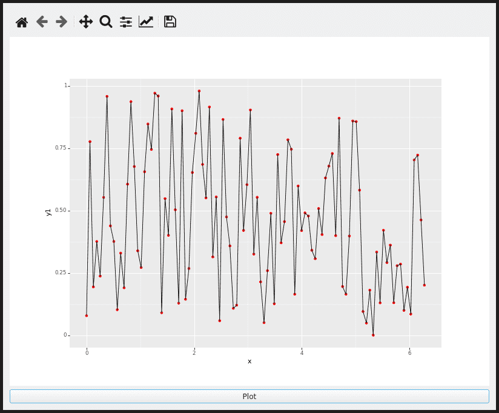

A PyQt5 Application¶
[1]:
import sys
import random
from plotnine import ggplot, geom_point, aes, geom_line, theme
import pandas as pd
import numpy as np
from PyQt5.QtWidgets import QApplication, QPushButton, QDialog, QVBoxLayout
import matplotlib.pyplot as plt
from matplotlib.backends.backend_qt5agg import FigureCanvasQTAgg as FigureCanvas
from matplotlib.backends.backend_qt5agg import NavigationToolbar2QT as NavigationToolbar
from matplotlib.figure import Figure
This example applicate creates a gui windows with a canvas and a plot button which when pressed draws out a plot from random data.
[2]:
dpi = 72
size_inches = (11, 8) # size in inches (for the plot)
size_px = int(size_inches[0]*dpi), int(size_inches[1]*dpi) # For the canvas
class Window(QDialog):
def __init__(self, parent=None):
super(Window, self).__init__(parent)
self.figure = Figure()
self.canvas = FigureCanvas(self.figure)
self.toolbar = NavigationToolbar(self.canvas, self)
self.button = QPushButton('Plot')
self.button.clicked.connect(self.plot)
self.canvas.setMinimumSize(*size_px)
layout = QVBoxLayout()
layout.addWidget(self.toolbar)
layout.addWidget(self.canvas)
layout.addWidget(self.button)
self.setLayout(layout)
def plot(self):
# generate some 'data' to plot
n = 100
x = np.linspace(0, 2 * np.pi, n)
df = pd.DataFrame({
'x': x,
'y1': np.random.rand(n),
'y2': np.sin(x),
'y3': np.cos(x) * np.sin(x)
})
# change the dependent variable and color each time this method is called
y = random.choice(['y1', 'y2', 'y3'])
color = random.choice(['blue', 'red', 'green'])
# specify the plot and get the figure object
ff = (ggplot(df, aes('x', y))
+ geom_point(color=color)
+ geom_line()
+ theme(
figure_size=size_inches,
dpi=dpi
)
)
fig = ff.draw()
# update to the new figure
self.canvas.figure = fig
# refresh canvas
self.canvas.draw()
# close the figure so that we don't create too many figure instances
plt.close(fig)
# To prevent random crashes when rerunning the code,
# first check if there is instance of the app before creating another.
app = QApplication.instance()
if app is None:
app = QApplication(sys.argv)
main = Window()
main.show()
app.exec_()
[2]:
0
The Application¶

Credit: Brad Reisfeld (@breisfeld) for putting this workflow together.